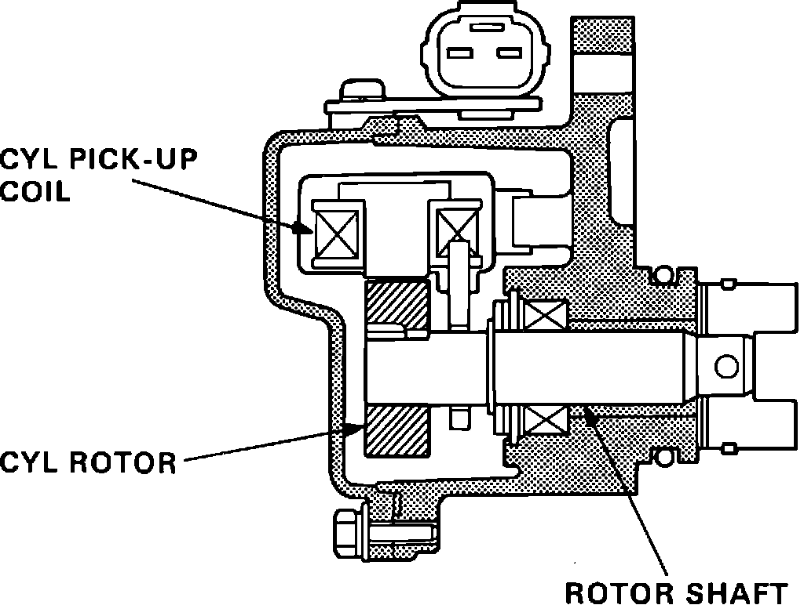

Crankshaft Position Sensor: Description and Operation
TDC/CRANK Sensor Operation:

The TDC/CRANK sensor is built into the distributor which is driven by the intake camshaft. The unit consists of two separate sensors, one for the TDC signal and one for the CRANK signal. Both sensors use a pickup coil and rotor to generate a low voltage signal to the ECU. The TDC signal is used to determine ignition timing at start-up and if the CRANK signal becomes abnormal. The ECU receives information from the TDC sensor on pins C3 and C4. The CRANK sensor is used to determine ignition and fuel injection timing while the engine is running. It's signal is also used by the ECU to determine engine rpm. The signal is applied to ECU pins B10 and B12.
CYL Sensor Operation:

The CYL sensor is mounted on the cylinder head and is driven by the exhaust camshaft. The sensor consists of a pick-up coil and a rotor. The sensor detects the position of the engine in reference to the #1 cylinder. A low voltage signal is generated by the sensor on ECU pins C1 and C2 based on the position of the rotor. As the rotor blade passes the the pick-up coil, it's magnetic field collapses, producing a small voltage signal. The ECU uses the signal for proper timing of the sequential fuel injection to each cylinder.